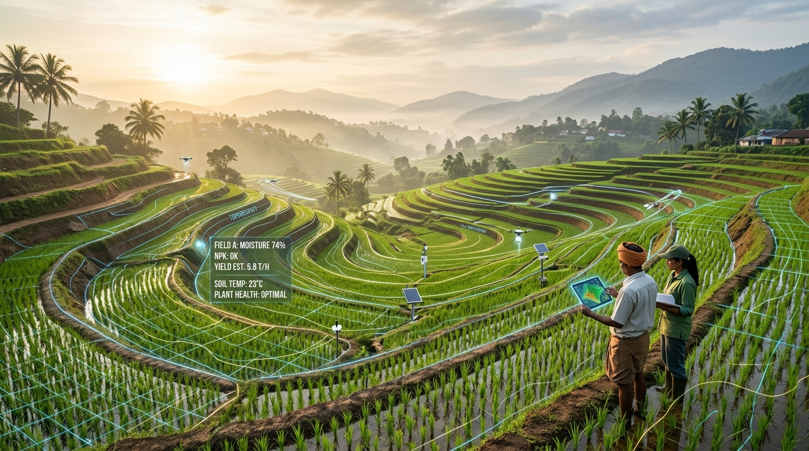

Tableau Public Story Point
Agricultural Crop Production Story
Explore the analytical story created from the agricultural crop production dataset.
Exploring crop production patterns across India through data analytics and interactive visualization.
This project analyzes agricultural crop production data to identify production patterns, compare crops and regions, and present meaningful insights through interactive Tableau visualizations.

Connecting crop production datasets with interactive geospatial & multi-dimensional Tableau intelligence.
India's Agricultural Crop Production Analysis is a data analytics project focused on understanding agricultural crop production patterns in India. The project uses data visualization to explore crop production trends and present the results through an interactive Tableau dashboard and story.
Examines crop production volumes, seasonal yields, and crop types to uncover underlying output characteristics and distribution across cultivation cycles.
Facilitates spatial and regional comparisons to highlight regional variations, state-level performance, and geographic patterns of crop production across India.
Leverages visual analytics principles to convert complex structured agricultural datasets into clear, intuitive, and interactive Tableau dashboards.
Provides an analytical foundation for researchers and students to interpret crop performance, historical behavior, and significant production trends.
The core research aims established for this BTech AI & Data Science academic inquiry.
Analyze agricultural crop production data in India.
Understand variations in crop production.
Compare production patterns across available categories/regions.
Identify important trends and patterns in the dataset.
Present the analysis using interactive Tableau visualizations.
Communicate meaningful agricultural insights through a dashboard and story.
A systematic data analytics methodology following standard data science lifecycle practices.
Acquisition of agricultural crop production data for structured analysis.
Handling missing values, data anomalies, and ensuring field consistency.
Initial exploratory inspection of distributions, variables, and categories.
Examining crop production variations across regions, types, and periods.
Designing visual representations to convey patterns and relationships effectively.
Integrating multi-view interactive dashboards with responsive user controls.
Synthesizing meaningful agricultural conclusions through data storytelling.
Explore India's agricultural crop production data through the interactive Tableau dashboard.
Explore the analytical story created from the agricultural crop production dataset.
Key analytical observations derived directly from the Tableau visualizations.
Add verified project finding here.
Add verified project finding here.
Add verified project finding here.
Add verified project finding here.
A structured workflow illustrating each sequential phase from raw agricultural records to interactive storytelling.
Sourcing crop production records covering crops, areas, and yields.
Handling missing attributes, formatting types, and validating records.
Statistical inspection of crop parameters, variability, and distributions.
Evaluating relationships, state aggregates, and crop categories.
Designing visual encodings, geospatial layers, and charts.
Composing the unified interactive Tableau workbook view.
Structuring narrative checkpoints in Tableau Story format.
Deriving actionable knowledge and academic interpretations.
The project demonstrates how data analytics and visualization can be used to explore India's agricultural crop production patterns. The Tableau dashboard and story provide an interactive way to examine the available data and communicate meaningful insights.
Transforms tabular records into interactive visual representations that facilitate exploratory inquiry.
Combines modern web engineering standards with Tableau Embedding API v3 for seamless browser interaction.
Applies AI & Data Science principles directly to key challenges in Indian agricultural data exploration.